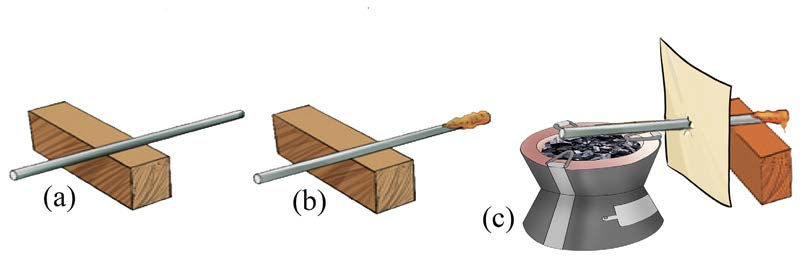

2.
Place wax or a candle at one end of the metal as shown in Figure 2(b).
3.
Position a piece of stiff paper between the wax and wood. This prevents direct heat from the stove from reaching the wax as shown in Figure 2(c).
4.
Place the charcoal stove at the other end of the metal piece as shown in Figure 2(c).

5.
Light the charcoal stove and wait. What happens to the wax?
6.
Write down what happened to the wax after lighting the stove.
Results
After lighting the stove, the wax melted. This implies that, heat was transferred from the source to the metal and wax.
Conclusion
This experiment proves that heat travels through solids by conduction.